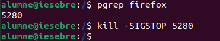
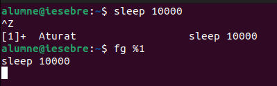
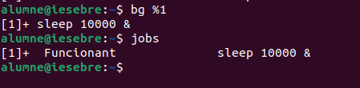
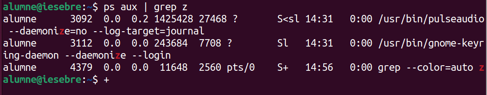
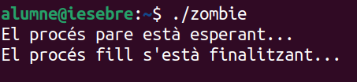
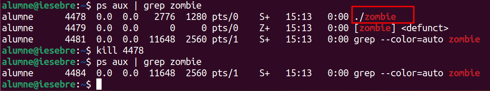

Guia sobre Processos en Linux
Què és un procés?
Un procés és un programa en execució que inclou:
-
El codi del programa.
-
Els recursos assignats (memòria, fitxers oberts, etc.).
-
La seva execució en un o més fils (threads).
Els processos en Linux poden ser:
-
Processos en primer pla (foreground): S'executen interactuant amb l'usuari a la terminal.
-
Processos en segon pla (background): Funcionen sense interferir directament amb l'usuari.
Comanda top
La comanda top mostra en temps real una llista dels processos actius del sistema. Proporciona informació com:
-
PID: Identificador únic del procés.
-
USER: Usuari que ha iniciat el procés.
-
%CPU: Percentatge d'ús del processador.
-
%MEM: Percentatge d'ús de la memòria RAM.
-
COMMAND: Nom de la comanda o programa.
Paràmetres útils:
- q: Sortir de la vista de
top. - k: Permet matar un procés especificant el seu PID.
Exemple: Anem a matar el procés del Firefox, apretem la K i escrivim el PID del procés.
HTOP
htop és una eina interactiva per monitoritzar processos i recursos del sistema en temps real. Ofereix una interfície gràfica basada en text que resulta més intuïtiva i fàcil d'usar en comparació amb top. Tot i que no està instal·lada per defecte en la majoria de sistemes Linux, es pot instal·lar fàcilment.
Característiques principals d'htop
- Interfície intuïtiva:
- Mostra els processos en un format visual clar i organitzat.
-
Utilitza colors per indicar l'ús de recursos com CPU, memòria i swap.
-
Controls interactius:
- Permet navegar per la llista de processos amb les tecles de fletxa.
-
Pots matar, pausar o reprendre processos amb tecles directes sense necessitat de recordar els PID.
-
Visualització dels recursos del sistema:
- Representa gràficament l'ús de la CPU, memòria RAM i swap.
-
Mostra informació clara sobre els cores individuals de la CPU.
-
Filtratge i ordenació fàcil:
- Pots ordenar els processos per ús de CPU, memòria, temps d'execució o altres criteris amb tecles simples.
- Permet buscar processos pel seu nom.
Diferències i millores respecte a top
| Característica | htop |
top |
|---|---|---|
| Interfície gràfica | Colorida, clara i interactiva. | Simple i basada en text. |
| Navegació | Tecles de fletxa per moure't per la llista. | No permet navegació interactiva. |
| Gestió de processos | Es poden matar, pausar o reprendre directament. | Cal introduir el PID manualment. |
| Visualització dels recursos | Gràfics de CPU, memòria i swap per nucli. | Informació textual menys visual. |
| Ordenació i filtres | Opcions d'ordenació intuïtives i cerca fàcil. | Ordenació manual i menys accessible. |
| Configuració | Altament configurable des del menú. | Configuració limitada. |
Per què htop és millor per a molts usuaris?
- Facilitat d'ús: L'interfície intuïtiva fa que sigui més còmode treballar amb processos, especialment per a usuaris menys experimentats.
- Eficiència visual: Els gràfics i els colors ajuden a interpretar ràpidament l'ús de recursos.
- Gestió interactiva: Navegar i gestionar processos és molt més ràpid i senzill.
Si tens preferència per eines intuïtives, htop és una excel·lent alternativa a top.
sudo apt install htop

Comanda pstree
pstree mostra els processos en forma d'arbre jeràrquic, visualitzant com els processos estan relacionats (pare-fill).
Paràmetres importants:
-p: Mostra els PIDs dels processos.-u: Mostra els noms dels usuaris que han iniciat els processos.-a: Mostra arguments complets de les comandes associades als processos.-h: Ressalta el procés actual dins de l'arbre de processos.-l: Evita truncar línies llargues, mostrant tot l'arbre sense talls.
Comanda ps aux
La comanda ps aux mostra informació sobre tots els processos actius del sistema, incloent-hi aquells que no estan associats amb un terminal.
Sortida de ps aux
La sortida de ps aux mostra informació clau sobre els processos en execució:
- USER: Usuari que ha iniciat el procés.
- PID: Identificador únic del procés.
- %CPU i %MEM: Percentatge de CPU i memòria RAM utilitzats pel procés.
- VSZ: Memòria virtual total utilitzada pel procés.
- RSS: Memòria física resident utilitzada pel procés.
- TTY: Terminal associat al procés (mostra
?si no n'hi ha cap). - STAT: Estat del procés:
| Símbol | Significat |
|---|---|
| R | Executant-se (Running). |
| S | Inactiu (esperant dades). |
| T | Pausat (Stopped). |
| Z | Procés zombi (Zombie). |
| I | Inactiu (Idle), sense consumir recursos. |
| < | Alta prioritat de CPU (High-priority). |
| s | Líder de sessió (session leader). |
| l | Multithread (utilitza diversos fils). |
| + | Associat al terminal en primer pla. |
Aquestes columnes ajuden a monitoritzar i gestionar els processos del sistema.
Senyals de processos en Linux
Els senyals són eines que permeten interactuar amb processos en Linux per gestionar-los de diverses maneres, com tancar-los, pausar-los o reprendre'ls. A continuació, es presenta un resum dels senyals més utilitzats i els seus números associats.
Taula de senyals i accions
| Senyal | Número | Acció |
|---|---|---|
| SIGTERM | 15 |
Sol·licita que el procés s'acabi de manera ordenada. |
| SIGKILL | 9 |
Força la terminació immediata del procés. |
| SIGSTOP | 19 |
Pausa el procés sense matar-lo. |
| SIGCONT | 18 |
Reprèn un procés pausat. |
Important!
Els números associats als senyals són estàndards en sistemes Linux, però poden variar lleugerament segons l'arquitectura o sistema operatiu.
Fer "stop" d'un procés
En aquest exemple, fem que el procés de Firefox entri en un estat "dormint" (pausat), on deixarà d'executar-se temporalment i no respondrà.
Identificar el procés
Primerament, hem d'identificar el PID (Process ID) del procés de Firefox utilitzant una de les comandes següents:
kill -SIGSTOP <PID>

Resultat:
El procés entra en estat Stopped (pausat).
Firefox deixarà de respondred.
Per tornar a aixecar el procés que hem pausat, utilitzem la següent comanda:
kill -SIGCONT <PID>
Pausat (Tl): El procés principal de Firefox estava pausat abans de la comanda kill -SIGCONT 5976.
Reprenent (Sl): Després de kill -SIGCONT, el procés principal de Firefox torna a estar en estat dormint (Sl), preparat per continuar el seu treball habitual.
Gestió de processos amb kill
El comandament kill permet enviar senyals als processos per realitzar accions com finalitzar-los de manera ordenada, forçar la seva terminació o gestionar el seu estat (pausar-los o reprendre'ls).
pkill (Finalitzar pel nom)
Permet acabar processos especificant el nom del procés en lloc del PID. És útil quan no es coneix el PID exacte.
killall (Finalitzar tots els processos amb un nom)
Tanca tots els processos que comparteixen un mateix nom, facilitant la gestió de processos múltiples.
SIGKILL (Forçar terminació)
Envia la senyal SIGKILL per acabar immediatament un procés. Aquesta acció no permet al procés netejar recursos abans de finalitzar. És útil per a processos que no responen o estan bloquejats.
Consideracions
Sempre és recomanable començar amb
SIGTERM (15)per permetre un tancament ordenat, i només utilitzarSIGKILL (9)si el procés no respon.Les senyals com
pkillokillallsón molt útils si no coneixes el PID del procés o si tens moltes pestanyes obertes.
Gestió de processos: Ctrl+C i Ctrl+Z
Ctrl+C
-
Finalitza immediatament el procés en primer pla.
-
Útil per aturar programes que no responen o que ja no necessites.
-
El terminal queda lliure per acceptar noves ordres.
Ctrl+Z
-
Pausa el procés en primer pla i l'envia al segon pla amb estat "Aturat".
-
El procés es pot reprendre més tard en primer o segon pla.
-
Ideal per gestionar programes sense tancar-los completament.
Exemple pràctic: Pausar i gestionar un procés
Execució d'un procés llarg:
Quan un procés llarg s'executa, com ara sleep 1000, aquest bloqueja el terminal fins que finalitza.
Per comprovar l'estat del procés, podem utilitzar ps aux | grep sleep. Això mostrarà que el procés està "Dormint" (S), esperant el final del compte enrere.
Interrompre el procés amb Ctrl+C:
- Prement
Ctrl+C, el procés es finalitza immediatament, alliberant el terminal per noves ordres.
Pausar el procés amb Ctrl+Z:
- Prement
Ctrl+Z, el procés es pausa i es col·loca en segon pla amb l'estat "Aturat (T)".
Verificar processos aturats: Consulta els processos amb eines com jobs.
Beneficis de Ctrl+C i Ctrl+Z
Flexibilitat en la gestió de processos:
- Ctrl+C i Ctrl+Z són eines molt útils per gestionar programes en execució al terminal.
- Permeten controlar l'estat dels processos (pausar-los, reprendre'ls o finalitzar-los) sense necessitat de tancar el terminal.
Casos pràctics:
-
Pausar descàrregues llargues: Si estàs descarregant un fitxer amb
wgeto similar i necessites aturar momentàniament la descàrrega, pots pausar-la ambCtrl+Zi reprendre-la més tard ambbg. -
Interrompre processos llargs: Quan un procés, com
sleepo una cerca massiva de fitxers, bloqueja el terminal, pots aturar-lo temporalment ambCtrl+Zper realitzar altres tasques i reprendre'l quan sigui necessari. -
Proves de desenvolupament: Si estàs executant un programa en desenvolupament, pots pausar-lo per fer canvis ràpids al codi i reprendre'l sense haver de reiniciar tota l'execució.
Eficàcia i seguretat:
-
Eviten la necessitat de matar un procés completament, cosa que pot ser útil per preservar l'estat o continuar-lo més tard.
-
Permeten gestionar processos interactius de manera no intrusiva, deixant el terminal disponible per altres ordres.
Conservació de recursos:
- Els processos pausats amb
Ctrl+Zno consumeixen recursos de CPU, cosa que és útil en entorns amb càrrega elevada.
Reprendre els processos pausats
Després de pausar un procés amb Ctrl+Z, aquest es pot reprendre en primer pla o en segon pla. Aquí t'explico com fer-ho:
Reprendre un procés en primer pla
- Utilitza la comanda
fgper reprendre el procés pausat i tornar-lo al primer pla. - Exemples:
- Si només tens un procés pausat, escriu:
fg - Si tens múltiples processos, especifica el número del treball (job):
fg %1 - Això farà que el procés torni a executar-se en el terminal actual, bloquejant-lo fins que el procés finalitzi o es torni a pausar.

Reprendre un procés en segon pla
- Utilitza la comanda
bgper reprendre el procés pausat i executar-lo en segon pla. - Exemples:
- Si només tens un procés pausat, escriu:
bg - Si tens múltiples processos, especifica el número del treball (job):
bg %1 - Això farà que el procés continuï executant-se en segon pla, deixant el terminal lliure per a noves ordres.

Com saber el número del treball (job)?
- Utilitza la comanda
jobsper llistar els processos pausats o en segon pla. - Exemple de sortida:
[1]+ Aturat sleep 1000 - Els números dels treballs són els valors entre
[], com ara1o2.
Processos zombies i orfes
Què són els processos zombies?
Un procés zombi és un procés que ja ha finalitzat la seva execució, però que encara conserva una entrada a la taula de processos. Això passa perquè el seu procés pare no ha recollit el seu codi de sortida. Els processos zombies no consumeixen recursos de CPU o memòria, però poden ocupar espai a la taula de processos del sistema, limitant el nombre màxim de processos que es poden executar.
Identificar processos zombies
Per trobar processos zombies, pots utilitzar la comanda ps amb l'opció STAT per veure l'estat del procés:
ps aux | grep Z

Anàlisi de la sortida de ps aux | grep z
La comanda ps aux | grep z s'utilitza per buscar processos que continguin la lletra "z" en el seu nom o estat. En aquest cas, analitzem la sortida obtinguda:
Sortida
| Usuari | PID | %CPU | %MEM | VSZ | RSS | TTY | Estat | Comanda |
|---|---|---|---|---|---|---|---|---|
| alumne | 3092 | 0.0 | 0.2 | 1425428 | 27468 | ? | S<sl | /usr/bin/pulseaudio --daemonize=no --log-target=journal |
| alumne | 3112 | 0.0 | 0.0 | 243684 | 7708 | ? | Sl | /usr/bin/gnome-keyring-daemon --daemonize --login |
| alumne | 4379 | 0.0 | 0.0 | 11648 | 2560 | pts/0 | S+ | grep --color=auto z |
Com matar aquests processos
Si algun d'aquests processos es torna problemàtic o consumeix massa recursos, pots utilitzar la comanda kill per finalitzar-lo.
Identifica el PID del procés:
-
A la taula anterior, el PID de cada procés es troba a la segona columna. Per exemple:
-
3092per apulseaudio. -
3112per agnome-keyring-daemon.
Advertència: Els processos com
pulseaudioignome-keyring-daemonsón essencials per al sistema i el seu funcionament. Matar aquests processos pot causar problemes de so o de gestió de claus fins que es reiniciïn automàticament.
Exemple: Creació d’un procés zombi
En aquesta demostració, hem utilitzat un script en llenguatge C per crear un procés zombi de manera controlada.

Utilitza la comanda kill:
-
Per enviar un senyal de terminació ordenada (SIGTERM):
kill <PID> -
Per forçar la terminació immediata (SIGKILL):
kill -9 <PID>

- Utilitza la comanda
ps aux | grep <nom_del_procés>per comprovar que ja no està actiu.